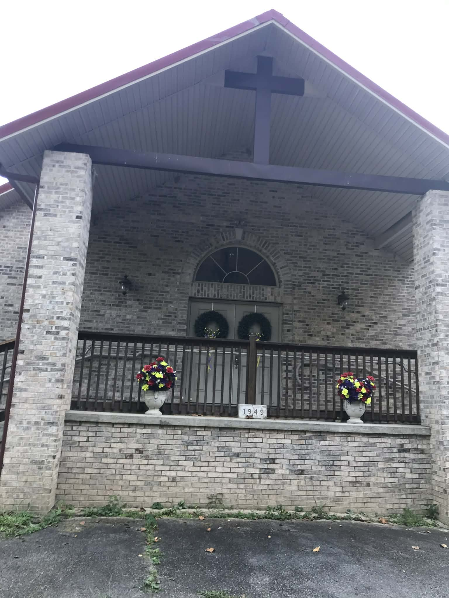
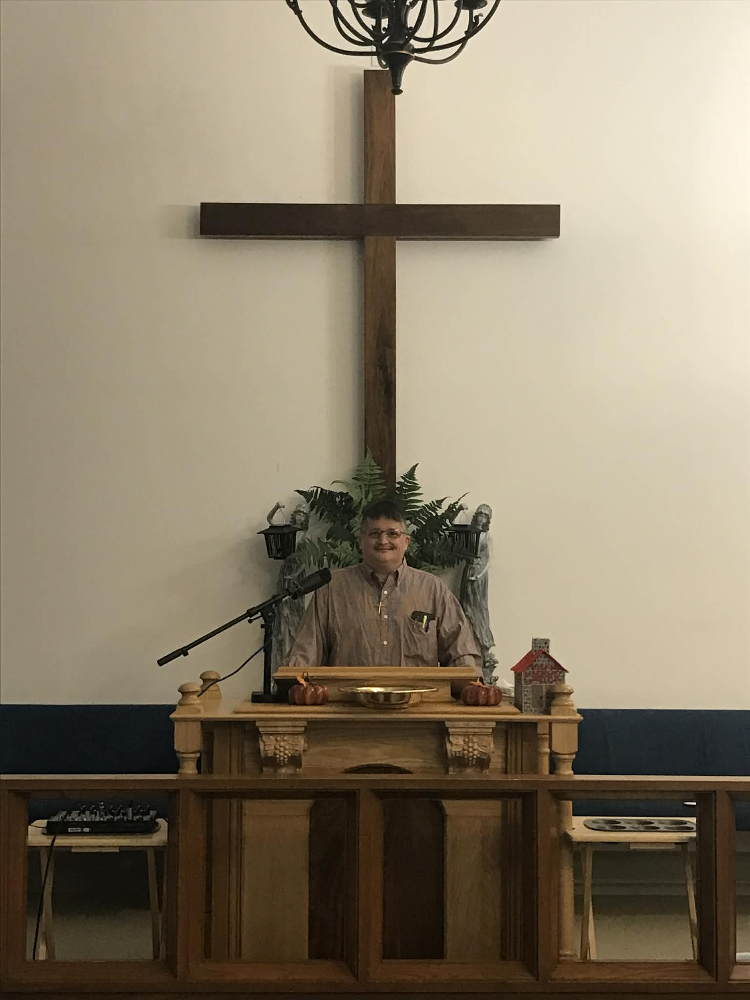

Pastor: Matthew Lee Penix of Tomahawk, Kentucky
Bible Study: Thursday 7:00 PM
Worship Service: Second Sunday 11:00 AM

Tomscreek United Baptist Church
Established in 1949
Located:
3734 route 581
Tutor Key, Kentucky 41263
King James Bible Online